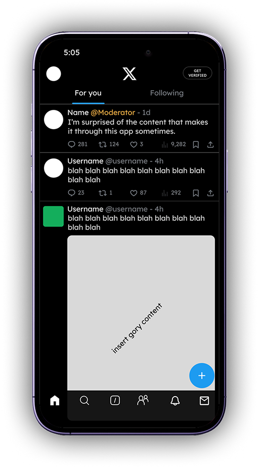
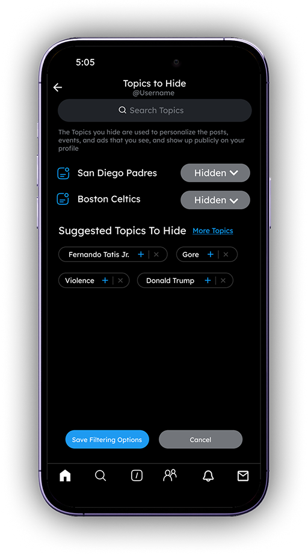
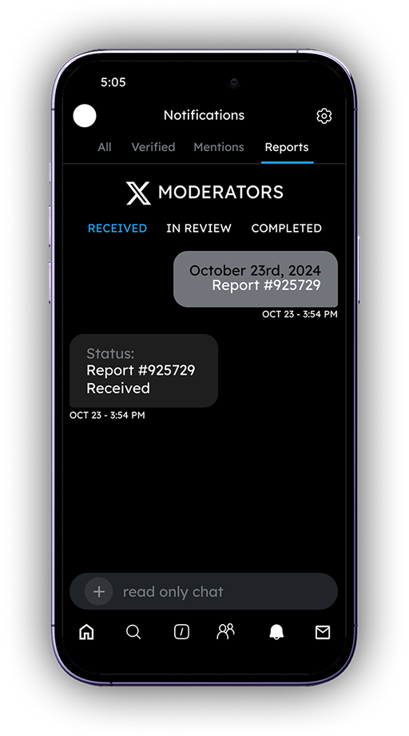
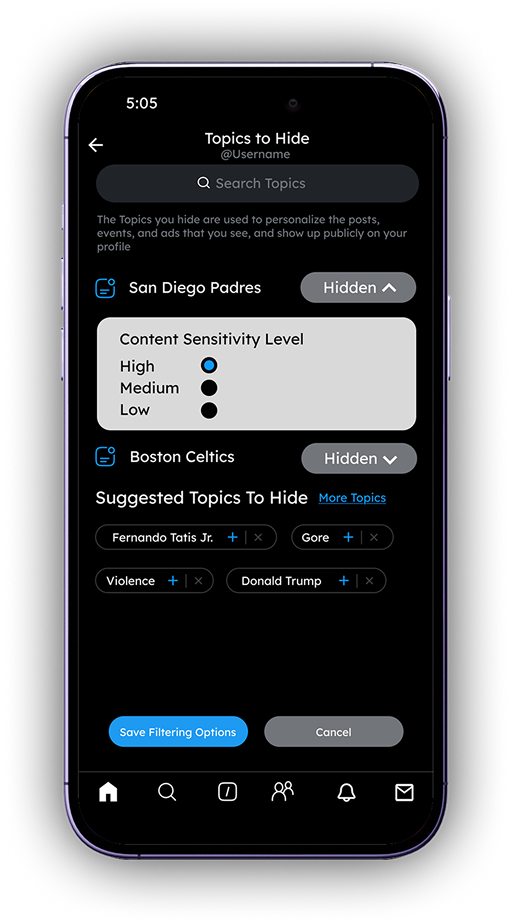
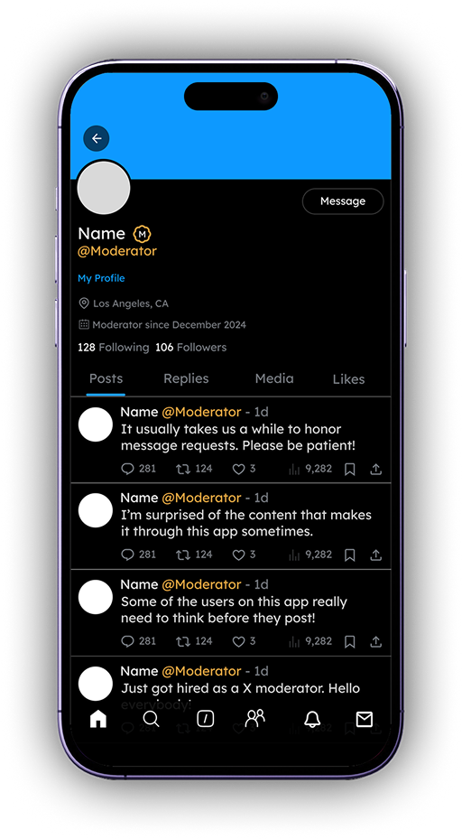
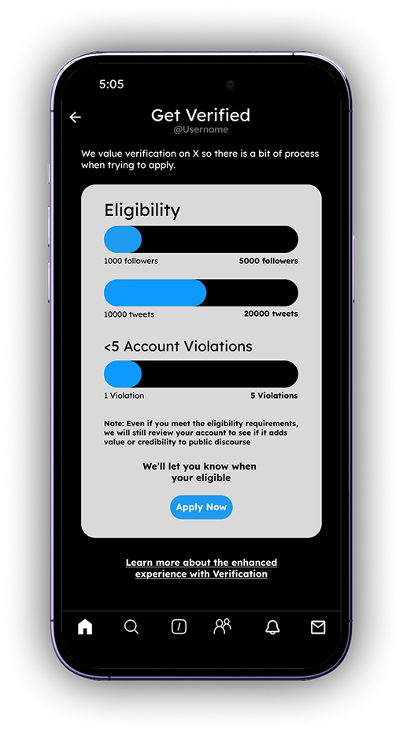
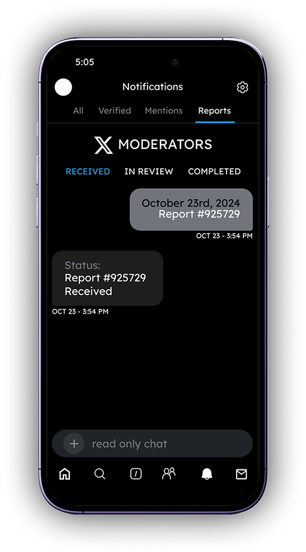
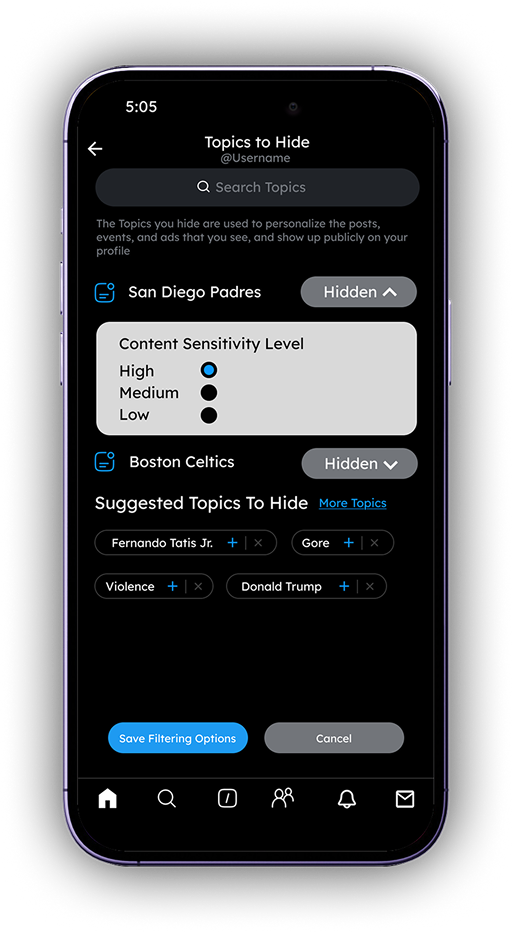
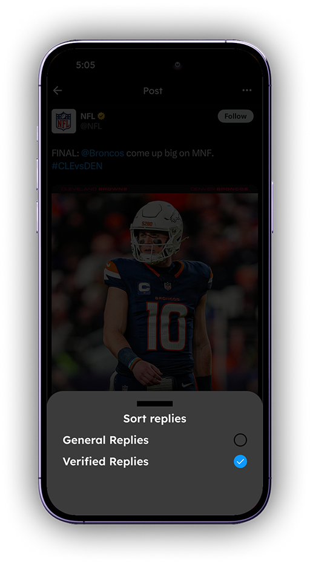

Reducing exposure to unsafe content on X


Persistent issue of harmful content on the social media platform X, which continues to negatively impact user experience and platform safety
I've encountered a significant amount of harmful content on X, including hate speech, misinformation, and violent imagery. These issues diminish user safety and highlight flaws in X's content moderation and feature design. This project explores UX changes that could reduce exposure to harmful content and improve the overall user experience.
After spending large amounts of time researching this issue, the main issues this prototype aimed to target included insufficient content filtering options, lack of human moderation, an ineffective reporting system, lack of human verification, etc.

The Reports” tab lets users track the status of their reported posts, adding labels like “In Review” or “Completed.” This builds trust by showing users that their concerns are acknowledged and being addressed.

This page and many more add customizable content filters, allowing users to see only topics they select and block topics they want to avoid. A content sensitivity setting (e.g., low to high) further helps users control what appears in their feed, improving comfort and safety.

Introduces verified moderator accounts that actively review and respond to content on X, making human moderation more transparent and accountable. Giving moderators a visible presence helps users feel their concerns are being addressed by real people, not just automated systems.

This redesigns the blue check mark system to include eligibility requirements, ensuring it reflects authenticity rather than just payment. By restoring credibility to the badge, users can better trust verified accounts and reduce algorithmic bias.
Usage of Elon Musk’s X, formally known as Twitter, experienced a 30% drop in usage from 2023 to 2024.
Due to policy shifts and weakened moderation, many users and news outlets cite safety, abuse, and user trust as reasons for user decline. My research aimed to investigate the design implications to regain user trust and platform usability.
Other platforms like Instagram, Reddit, and YouTube offer stronger content controls, clearer moderation feedback, and more credible verification systems than X.
Instagram gives users control over what content they see through sensitivity settings and topic filters. Reddit uses a hybrid moderation model with active community mods and transparent reporting outcomes. YouTube’s verification requires eligibility based on influence and authenticity, preserving the badge’s credibility.
YouTube
USER INTERVIEWS
Before completing these interviews, I had assumed each interviewee’s main desire would be the implementation of AI to remove harmful content. However, they went a different route and instead expressed desire for wanting more personalized filtering options to avoid topics they found disturbing, irrelevant, or harmful.
Research Questions:
THE MAIN INSIGHT
Based on the data I had gathered from my interviews, interviewees described feeling anxious, upset, or overwhelmed after seeing unwanted content in their feeds. Without proper filters, users are left vulnerable to content that negatively affects their well-being.
There are many mixed feelings from users when it comes to X. On one hand, they enjoy the casual, social vibe—sharing quick thoughts, funny memes, and connecting with others. But on the other hand, they’re worried that X is losing its charm, especially for younger users. Due to the high volume of negativity and toxic interactions, X has had a strong emotional impact on users.
While users find tools like muting and blocking helpful, they feel it’s not enough. They’re looking for more advanced options to filter and customize their feeds to better match their interests, similar to the control they have on other social media apps. Users want more flexibility and specific options so they can shape their experience on X to feel more personal and enjoyable.
Users are doubtful about X’s ability to make real improvements. They feel the platform is stuck or even going downhill, especially when they compare it to more dynamic apps like TikTok or Instagram. People are concerned that X is losing its appeal, particularly for younger audiences, and they’re not confident that X is committed to fixing issues like content quality and moderation. Overall, there’s a feeling that X might not take the steps needed to become a safer, more engaging place.


